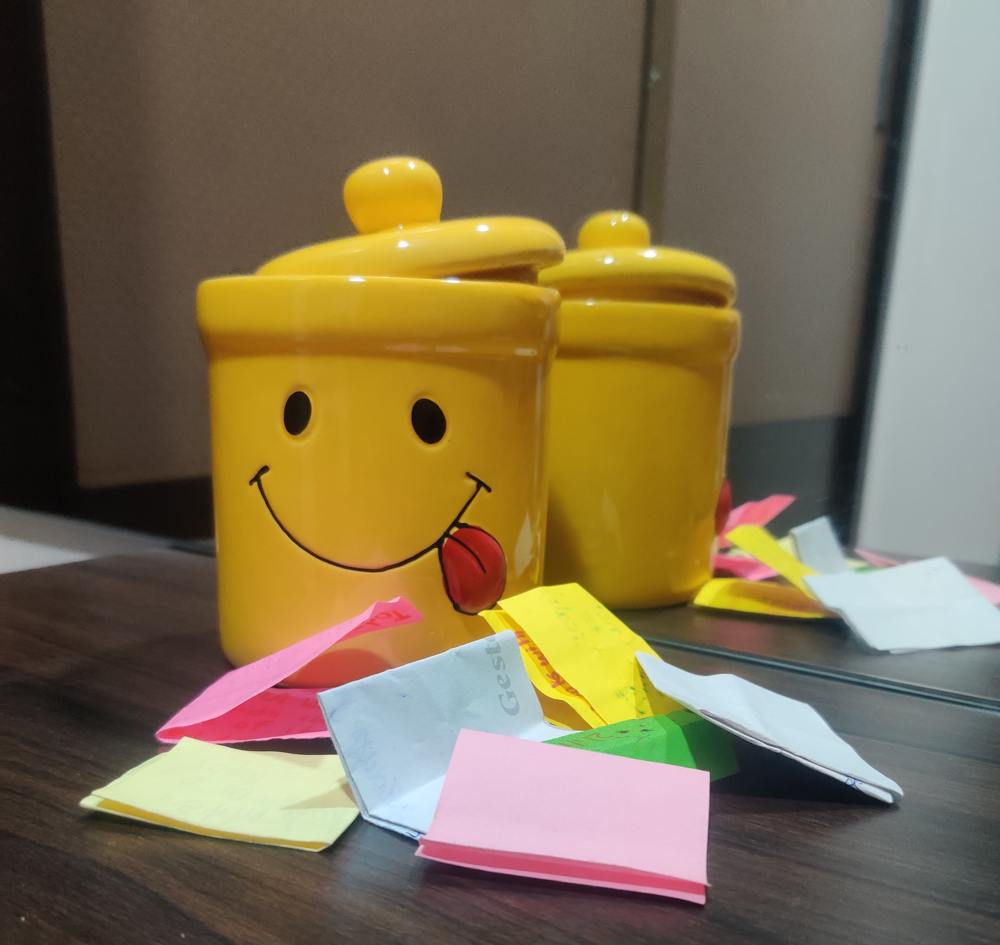
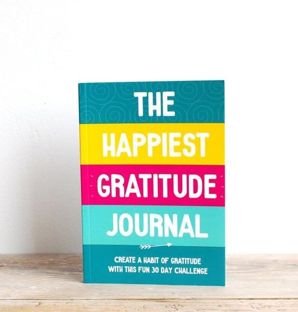
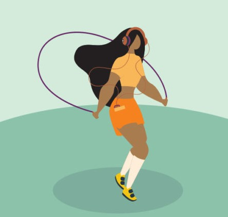
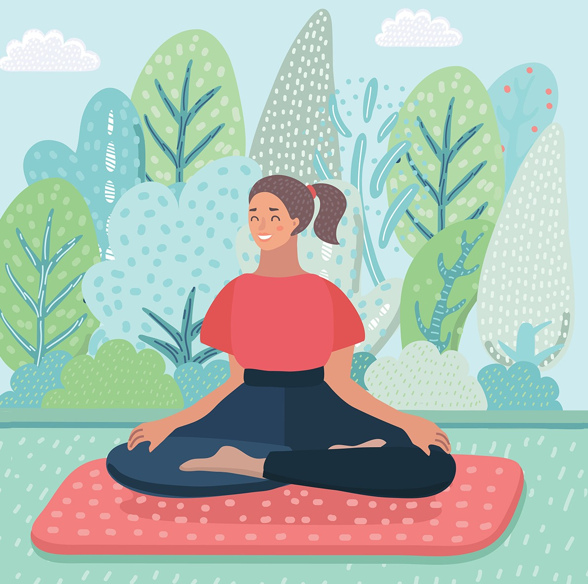

Q
1} The Positivity Jar

Make the Positivity Jar,by adding a note of the good things that happened
to you on that day.The good note can be of anything like your
mom made your favourite foor or you saw a puppy
tooday or you helped someone or someone helped you.And read all the notes at the end of week/month.
But remember it should only contain notes about GOOD things
2} The Gratitude Journal

Try using a Gratitude Journal,write down all the things you are Grateful for on that day in the journal,thank all the people and things who helped you around the day,they care for you.
3} Excercise

Try Excersing,it calms your mind.Excercising helps you in releasing the hormone known as 'Serotonin' which is also realted to mental well-being,smiling and happiness.Excercising can also help you take your mid off things.
4} Meditate

Meditation is the practise of focused concentration,bringing yourself back to the movement.It reduces stress,anxiety,blood pressure and calms your mind a lot.Trying it can help you relax.